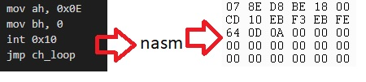

Будемо використовувати редактор коду Visual Studio Code.
Для компілювання програми nasm.
Для запису коду на флеш носій bootice.
Для компілювання програми nasm.
Для запису коду на флеш носій bootice.
Огляд повторюваних подій
Пишемо мовою асемблера та за допомогою nasm переводимо програму в
машиний код.

Машиний код за допомогою bootice записуємо на флешку.

В BIOS змінюємо завантажувальний носій з HDD на USB Flash.

Після перегляду роботи нашої програми змінюємо налаштування в BIOS назад,
для завантаження операційної системи.

Змінюємо нашу програму на асемблері та повторюємо дії щоб побачити
її роботу.